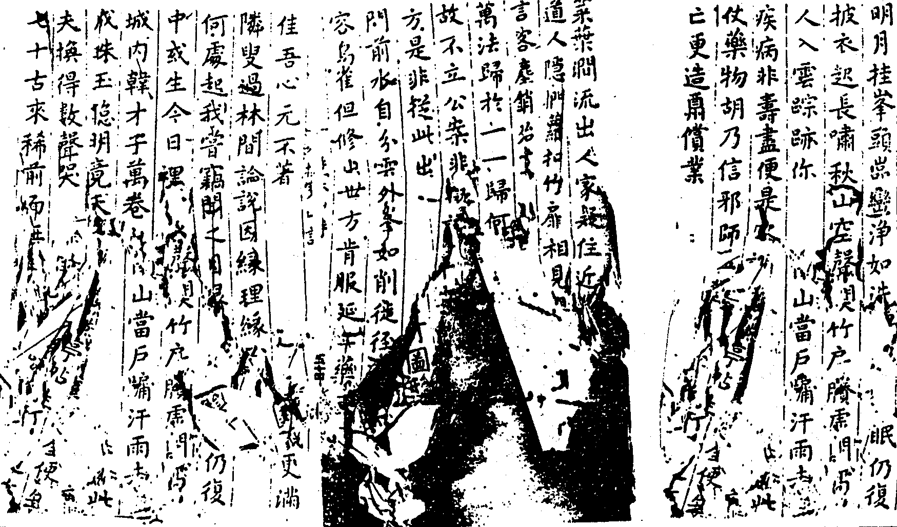
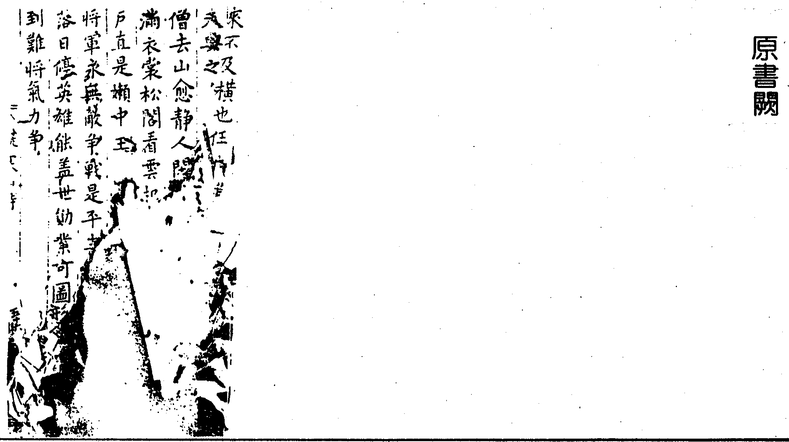

嘉興大藏經 第33冊
No.B293 擬寒山詩 (1卷)
【明 張守約追擬並序 唐守禮序 蔡善繼序（依駒本印）】
第 1 卷
梅村先生擬寒山詩序
梅村張先生博學力行究心佛乘善貧而好施予世出世間作諸利益事以百千種緇素賴之晚乃盡謝世味一蔬一飯參誦西方大覺不休叩以宗旨灑灑終日激切斐亹大有儆動居然闡法善知識也其所游戲翰墨率稟於教驟閱之即里耳可入潛玩而深體之即古澂言奧義不啻也以其類寒山子詩遂名擬寒山吾烏知寒山之為文殊而梅村之為寒山邪以其言可為後學之梯航則捕教翼聖之功不可泯滅他日與寒山詩並傳永永末世眾生其尚有大造哉故為之序而俾梓之以傳焉。
社末鎮山居士唐守禮識
梅村居士擬寒山詩序
寒山詩非詩也無意於詩而似詩故謂之寒山詩梅村居士擬寒山詩若千首警醒世迷發明大道聲響意為無非似寒山者以無意於寒山故能似寒山也居士素工詩老而逾妙笥中稿計不下數千篇為李為杜為王為孟為陶為謝靡不各極其致至所擬寒山詩則又若歌若嘯摩寫人情物態爽豁痛快讀之令人鼓掌頓足心神為開而毛髮為豎有味乎言之也未寒山子示跡污穢而獨以吟詠留題巖谷傳布街衢里井之間居士沈冥當世篋中之藏幾為韞櫝而獨以是編付諸副墨之子假剞劂以公同志而示人之意可想而知已嗟嗟濁世不可莊語故曼衍以窮年高言不止於眾人之耳則淺言以見意世之人以詩道求居士是編何足以盡詩居士之詩則固為李為杜為玉孟為陶謝自足稱雄詞林上下千古恨世莫得而盡見之耳乃余之知居士則未始以詩居士棲心禪那數十年究竟最上一乘之旨疑是龐老後身即列諸高士傳彼似有所不屑世之讀居士詩宜想見其人并求其意焉可也。
福山同杜本明居士蔡善繼
儗寒山詩自敘
寒山子詩以及慈受諸公儗寒山詩皆所以歌詠性靈闡揚道妙欲使眾生去妄歸真舍凡入聖厥旨微矣但多提唱宗乘罕有及乎淨土故約以為釋迦文佛入滅之後正法五百年持戒堅固像法千年禪定堅固末法萬年念佛堅固而而圾末法時也予山居多暇間為儗寒山訪要在勸人念佛往生樂國橫出三界永斷輪迴次則啟人戒殺放生長養慈心以為生方津筏至若山居賦事詠物等作所以發寒山慈受諸公之逸響少裨寒山慈受諸公之法施殆所謂覆杯土於泰山添勺水於滄海不自諒哉冀覽者式另著眼則狗尾蛇足之誚庶幾其少寬耳。
梅村居士張守約書
擬寒山詩
寒山三百篇篇篇是警策或歌廊廡間或書院宇壁當時國清寺僧行如雲集有耳胡不聞有眼胡不識
寒山出寒山拾得蹃拾得豐干自豐干三聖同混跡閭丘太守至當下齊言出拍手歸去來雲山高突兀
子擬寒山詩亦是隨口出也不期協韻也不求諧律但欲勸世人偶尒盈紙筆若徒炫耳目視之有何益
吾詩非蹈襲古風三五七但擬寒山子積累歲月日觀者休錯會等同閒書帙言雖似逆耳可以愈癨疾
佛於三界中老婆心太切念念度眾生念念無休歇眾生當痛心莫更造惡業恐負諸如來一點菩提血
死生亦大矣休若夢中過存者親朋少去的歲月多菩提開覺蹃進步莫蹉跎這箇埋塵鏡應須著力磨
修行法門多從何門裏進纔逢善知識霹面去詰問或云戒定慧或云經律論唯有修西方直入無漸頓
莫謂畜生微與人同氣血但恣我肥甘不顧他死活痛口說向君畜生非是別過去之六親未來之諸佛
遁居霞霧峰千山萬山裡白雲傍榻飛草閣依嵒起閑臥擁鹿裘清譚揮麈尾童子采茶歸自去汲泉水
檐端宿白雲峰頂懸孤月辭樹葉飛飛繞階泉決決靜夜永如年素衾明似雪林僧趣頗同磬擊秋山裂
佛是悟眾生眾生是迷佛悟似月當天迷似雲遮月嘗游雜華林就中聞妙訣心佛及眾生是三無差別
百年骨肉親猶如逆旅客倏聚得相逢倏散又相隔要死留不住受苦替不得慇懃勸世人各須自努力
菩薩度眾生應身隨萬類或現蚌腹中或處牛腎內一物度不盡誓不登佛位眾生太無知恣造彌天罪
破屋覆煙蘿石床苔蘚駁雲光澗底明泉韻嵒頭落山深忘歲年心懶醉丘壑木食與艸衣自得其中樂
傀儡共登場呈盡千般伎謾將笑劇看世上總兒戲傍觀若自由未免線索繫舞罷寂然休與人死無異
我愛山居好遶屋都種竹松風清我心澗月明我目有客便喫茶無飯便喫粥世人那得知清閑是真福
心為諸惡源身為眾罪藪觀心是無常萬善自諧偶觀身如實相百福緣茲有善惡初無根由於能觀否
高高峰萬層小小菴一個並無俗士來時有高僧過種楮補衣裳採薇供旦暮最愛聽松風就枕松根臥
生死輪迴理儒家信不及羊祜孩提時探環鄰樹窟若使無輪迴那能知往跡此是世間事非關佛書出
獨倚斷崖石閒看孤雲飛松風颯然來吹我身上衣群峰插霄漢青天四邊垂幽懷渺難言行行歌紫芝
性具形氣中似人之處宅宅成則居之宅壞又他適其宅有時壞而人未嘗沒形死性不滅此喻可概得
犯罪禁官牢舉家多痛哭痛其遭鞭撻哭其被桎梏世人卻不知家家有地獄籠雞以待烹圈豬以待僇
深深藤蘿谷裊裊松筠徑澗澗水交流山山鳥相應低低一個菴寂寂數聲磬皎皎青天月團團如寶鏡
嵒泉清溜溜林壑靜悠悠飛鳥影[肅*羽][肅*羽]鳴鹿聲呦呦峰頭雲靉靉松頂風颼颼一念恒寂寂萬緣總休休
若人大夢中自能做得主則於死來時亦能做得主夢中若顛倒死來那由你請將生死事卜諸夢寐裡
徒杖出風林嵒泉飛瀑布石上坐盤桓忽逢胡僧過云自天台來此去訪霞霧豎起柱杖子還識得這個
訪隱暮歸遲柴門半開閑踏葉微有聲黃犬隔籬吠屋角梅花橫寒光月在地仰止渴心生瓦罏湯正沸
世有殺人刀鋒利逾金銕晁錯被其誅孫臏被其刖或問何物造佞人三寸舌殺了多少人不見半點血
昨夜北風狂吹落滿山雪嵒岫見高低蹃徑難分別欲出辦勾當猶恐有錯跌只得且耐心少不消時節
枕石抱白雲聽泉臥空谷豺虎不動心荊榛皆悅目嵒畔與溪邊處處種脩竹儼然類瀟湘況沒有人哭
人人有個佛竟將埋沒了人人有個死竟若忘記了盡向外馳求略不一返照螃蟹落湯時你卻怎生好
昔有師子覺專修覲彌勒已生迷外院內院不得入何似修西方但念彌陀佛一生不退轉且是甚省力
蝦蟆避蛇啗急跳僧傍歇只因恐懼深喘懾久未絕須臾見小蟲張威便去囓惹得老中峰爰作蝦蟆說
開得兩坵田種下一色稻辛苦沒人幫稻熟兒孫要既謂那坵堪又謂這坵好憑他自揀擇我只呵呵笑
王戒生人道十善得生天享盡人天福還須受業冤若能加念佛托生寶池蓮無常生滅苦從此沒相干
世出世間法都要辦肯心肯心若辦得決不賺其人肯心若不辦枉自喪青春工夫既到處銕杵磨做針
白雪易盈頭紅塵難下足卑哉楊州鶴謬矣荊山玉儒書散與人梵筴堆連屋非是慕多聞聊假以遮目
小病常須有荒年不可無順風船易覆險道馬無虞死豈分衰壯貧何別智愚人能諳此理勝讀十車書
嵒屋結婆娑林扉開窈窕泉遶灶前流月向床頭照日日白雲尋夜夜青猿叫笑殺一樵夫驀然來問道
聖人能盡善眾人得失均舍短取其長個個是好人舍長取其短個個是匪人唯能行一恕大地是陽春
修羅性多嗔諸天心正樂鬼神沉憂愁鳥獸懷獝狘惟人坦蕩蕩儘堪修白業若但因循去世無自然佛
有一猛丈夫登山誓見佛蛇虎任吞噬向西瞻禮切彌勒欲化度其志竟難奪尋感彌阤來授衣親記莂
平地三尺雪當窗一片月清宵如白晝梅花香不絕童子謾煎茶阿翁默念佛不是世間人烹庖醉麴糱
富貴本在天枯榮元有命笑殺癡呆漢欲以人力勝瞞心并昧己行險以僥幸人雖巧作為天更巧報應
得人之小恩常須懷大報不知報恩者多遭橫死道此是金口宣普為諸人告以德去報怨老子術亦好
有鳥八八兒解隨僧念佛臨終能立化埋後尤奇特口內出蓮花定生極樂國世間闡提人可以鳥不及
佛說一切經開口便稱孝天經與地義儒家用立教孝行故多端順親為至要無間地獄中第一不孝道
昨日顏如渥今朝鬢雪生年光若流水東去無回聲不早著精彩何能出火坑改頭并換面錯了定盤星
我欲去打人人亦來打了我欲去罵人人亦來罵了卻如自打罵並不差毫眇筭來沒便宜不如忍耐好
青春窈窕女年當十六七脩眉柳葉纖暈臉桃花色輕盈不動塵巧笑能傾國多少好男子出他手不得
蒼天愛我深許作清閒客苕霅山水佳其中為窟宅清秋新雨霽箕踞盤陀石夕陽下嶺時支頤看山色
舉世好滋味慣常不知過食羊要擇肥喫蟹必揀大不知人與畜元是輪流做至哉祖師言一個還一個
蓮花中化生人多起疑惑不見蚊蟲艸蚊蟲草莢出十萬億佛土恐難便到得不見夢中行萬里在倏忽
日日望春來忽然秋又至花開不多時落葉已滿地少壯易老衰與彼何以異不早去修行生死非兒戲
竊聞無是公慣居何有鄉逃形遊鹿豕慕古夢羲皇穴處三冬暖衷披五月涼床頭堆橡栗卒歲有餘糧
近世塑菩薩思憶眾生相面欹于掌中臂拄于滕上思憶由于心豈在做模樣菩薩名六端胡妄造斯像
後生見老人心中常鄙賤同席不交談閒時嬾會面天那忍假年與此浮薄漢省得他老來又被後生厭
眾生正性命皆起于婬慾婬慾由恩愛生死因相續恩愛若斷時那為生死梏往來三界賓菩薩別機局
善人人人喜惡人人人惡明知為善好暗造惡何故為善由于己善人不難做為惡加于人惡人未易做
凡欲修行人務要除習氣習氣若未除修行力正未嗔多先戒嗔技癢先棄技儒家克己功須從難處去
竹底搆危亭苑間開小徑策杖謾經行閉關還取靜重違長者車恒抱維摩病住處近僧廬風林聞夕磬
桂醑金卮泛華堂寶篆燒妖童歌皓齒艷妓舞纖腰事事如心意時時逞富豪世間無柰爾只是死難逃
場畜幾隊雞池養一群鴨待客不必言自奉亦常殺口裏語喃喃舌頭響扎扎原要喫還他竟不思量著
人若負我物怪他不肯還吾若少人財置之如等閒本是一個心用之有兩般所以三惡道只在方寸間
教起韋提希具說十六觀勝劣皆往生仗佛弘擔顧橫出三界中工夫且昜幹別修至有頂終未到彼岸
懸壁灑風泉清秋殘暑退入谷尋僧廬垂藤牽客袂雨餘山翠流葉落林聲碎老衲據繩床白頭忻晤對
昨日弔一鄰今日哭一親年皆少于我地下先修文雖然有先後未免輪到身不早辦盤費臨期忙殺人
郡中有市肆廣集四方物早晚應人求至於癈寢食這等好念頭人何不感激但有覓利心枉費許多力
盡羨張三乖皆嫌李四愚愚者為田夫乖者作訟師耕田足衣食爭訟多是非君看愚與乖那個得便宜
宋氏曾渡蟻遂獲大魁福方氏曾殺蛇遂遭赤族戮昆蟲且如此況乎禽與畜殺生與救生報應何其速
淨土妙法門彌陀大願力千生萬劫來今朝始識得當生難遭想慎勿更錯失念佛求往生貴在心專一
處人若太刻其心懷恨切無有銷化時如服金剛屑萬劫與千生報冤無停歇著實勸世人冤家不可結
屋角放梅花一時香撲鼻東風驀地來滿地花狼籍衰榮若夢幻生死在倏忽吾心感物情倚杖花邊立
種樹欲成陰教子欲成人竟忘要緊者自己一個心說在腔子裏要尋無處尋若還認得了青山無古今
槲葉紉為裳蘭蓀儲作糧別人笑我懶我笑別人忙靜夜聞天籟寒潭弄月光不教塵土夢惱亂我心王
世人欲自立不敢為妄語妄語多破賺見絕於鄉里佛若有虛誑龍天肯信許唯其語真實故號世無比
柏子滿爐燒[香*愛]然香縷縷蒲團作半趺山室靜如許歲晚梧桐飛夜深魍魎語懸燈照寂寥瑟瑟疏林雨
一生作樵夫總被青山弄雙鬢看看白兩肩轉轉痛晨採和雲濕暮挑帶月重無錢儘取去但不上門送
目連持缽食救母地獄間母怪餓鬼覷以手遮缽前即變為猛火一粒不得餐業力勝神力除飢要除慳
參禪難把捉誦經非究竟佛開方便門末法眾生幸至心念彌阤觀想西方境直超生死流修行最捷徑
漁者不能獵獵者不能漁唯養口腹人以財為網羅羽毛并鱗甲無不被其屠反重漁獵罪哀哉復嗚呼
見有聰明漢未說先會得當在人面前經律如口出轉在人背後葷腥恣意喫不是要瞞人只是信不及
堪憐世間人因妄起諸病卻去殺生靈禱神祈感應人既欲求生物獨不愛命正直者為神肯玩生殺柄
須彌大海中半居天上面周圍四天下日月腰間轉東曉則西昏南午北夜半如是之世界不可數量算
人生處世間取法當如錢裡面既要方外面又要圓不圓行不去不方守不住凡我子若孫毋忘這幾句
佛家有焚身然臂及然指能捨其難捨或者起非議人于無始來虛浪幾生死危脆易堅固未知斯理耳
西天多外道九十有六種一切諸經書見題便成誦不能了自心狂慧亦何用妄謂證菩提罪犯過十重
三伏火雲烈農夫無躲藏面上汗如雨田中水似湯螞蝗叮腿痛苗葉割體傷粒粒皆辛苦斯言甚勿忘
此人不夢舟南人不夢車世之說夢者由所見所思有不因聞見形夢卻何如曩昔藏八識多生發現之
或難無量眾林中齊念佛那得許彌陀同時俱引接不見月在天一輪更無別萬壑與千江處處皆得月
眾生遞相啖決定無疑議人喫羊不難羊喫人亦易相傳村俗言且自有意味蜻蜓咬尾羓星星自喫自
荒年食反足皆因去歲豐熟年腹反飢皆因去歲凶情事甚明白可以曉兒童三世罪福因其理將無同
物外寄閒身諸緣任運歇不染半點塵唯念一聲佛性使軟如綿心教硬似銕肯作無益事水底去撈月
人生有定分各宜安分好鳧頸與鶴頸長短非多少若去強安排闇中被鬼笑野鹿逐陽焰辛苦徒自討
我愛嵒畔松年年長一臺松花炊作飯松枝修作柴松聲風送至松影月移來當時空錯過恨不買山栽
葛繁辦好心日行利人事念念在利人此心與天契生為陰司重死踏蓮花地勸君學葛繁利他亦自利
若人能斂念靜坐一須臾勝造恒沙數七寶窣堵波寶塔久必壞靜心功莫逾只此這一念究竟證真如
廬山聽經鵝徑山聽經雞師化亦俱化禽中也太奇多見世間人聞經反皺眉於汝意云何問取須菩提
我有一般寶六處常放光無中亦無表非圓又非方不與萬物侶能為諸法王虛靈離影象堂堂復堂堂
僧有貪婪者恣情於味上食稍不稱意怒罵捷影響病臥起不能眾惡絕其養嗔心轉熾盛生身化為蟒
山空宿鳥鳴澗道眠松影涼月夜凄凄明河秋耿耿長歌復短吟來往無人境疏鬢不堪搔絺衣風露冷
世人城府深相交匪容易面是而背非外親而內忌戎狄生同舟風波起平地真是苦娑婆只宜早拋棄
得生成家子心意恒歡忻或生敗家子終日起怒嗔不知戊與敗前生造定因還債并討債此語不差分
耕田博飯喫紡布博衣穿未嘗見官府肯去學神僊花外聽禽語松間看月圓此心休休地終日抱琴眠
鬼神見惡人則起嗔怒心菩薩見惡人則起慈悲心慈悲思救度嗔怒降災禍菩薩與鬼神便差這地步
綠楊掩畫橋並立啼煙鳥羽毛分外奇音聲亦甚好自喜時飲啄將謂長相保那知輕薄兒挾彈春風道
藤覆石床平霞明山閣曉花香和暖雲芳塢啼春鳥習嬾起常遲遣魔醒獨早真風生性空摠把情塵掃
行也行方便坐也行方便諸聖尋常察上天自然見不錫之以福即加之以算還有好因緣在於你後面
昨日入蓮社口佛心亦佛今日火宅中事雜念亦雜若非根器深未免塵勞汩是以古哲人山中修淨業
諸佛有大戒偶因藏中讀度酒與僧尼百劫無手足度者罪非輕飲者罰尤酷不惜苦口言勸君宜三復
嗜味忍心人環火去逼羊充饌固然美痛苦那堪當罪囚縛都市刀劊遶其傍此時囚心苦與羊略相償
春光正明媚杜宇催歸急豔杏與天桃漸漸減顏色長林宿雨收芳艸連天碧陌上絕遊人山頭臥閑客
人若富得快貧也貧得快人若富得遲貧也貧得遲眼中往往見世上人人知到手多顧快如何復何如
心若想懸崖足跟便酸澀耳聞談酢梅口中便水出懸崖未現前酢梅非真喫口水與足酸畢竟從何得
愛殺天台山石梁橋下水自古以及今潺潺流不止人代有變遷水聲只如此好與五百流洗得一雙耳
鶴本是仙禽那堪同碌碌如何受豢養卻被世人畜竹間斂雙翼花底縮兩足萬水與千山可無一飽腹
有客修西方過我問方便眷屬生厭離彌陀起慕戀五戒宜精專一心常不亂如此用工夫截流登彼岸
至哉至人語冤乃生於親離親即離冤平生聞未聞一人譬居越一人譬居秦從來不親識何處起冤嗔
青山對白頭電景良堪惜纔過三月三又早七月七花開春霧香葉落秋風急垂老撫嬰兒何時能替力
長見世間人眷屬如意少初然甚疑之既而心了了此皆是宿生淫慾所招報自作還自受不用生煩惱
猗歟純陽子神仙中第一自從見黃龍深悔平生術金丹不復煉瓢囊摠拋擲寄語道家流体錯用心力
烏鵲哺雛時萬分心愛護一啄十餘呼一飛十餘顧辛苦養長成驀被罟師捕哀鳴及追逐我不忍聞睹
有錢父母死子孫純是爭無錢父母死子孫純是哭此語非無稽時常經耳目著甚麼來由抵死去積畜
佛身充法界疑信尚未定吾有一譬喻請君細詳聽國朝洪武間術人冷起敬得罪遁瓦缾缾碎片片應
木榻眠雲穩梅花入夢香平生讎禮法盡▆嬾衣裳野老遺鳩杖鄰僧助鶴糧山居是非外甲子亦都忘
五百鬼啼哭五百鬼謳吟悲歡非孟浪升隊由子孫子孫方作善謳喜出離辰子孫方造惡哭為轉沉淪
趙姬一十八周母四十五盡去觀趙姬無人理周毋毋向觀者言昔我還嬌嫵不彀三十年渠亦如今我
鄰娃貴介得眾中獨取憐嬌花爭色豔細柳鬥偠纖雲髻教人整羅衣不自穿秋霜暗點鬢明月落誰邊
秦人視越人肥瘦不關己人子見親骸其顙忽生泚這點差別心畢竟從何起虛空落地時方好說向你
參禪與念佛難易那推測譬如竹中蟲其心欲求出逐節蛀到頂盡形未可得若能從橫蛀出離不終食
順風則張帆逆風則牽縴但期舟必進隨宜而應變世間出世間亦各有方便毋作面墻人不知墻外面
嵒壑絕還通盤迴千百折洞深雲住寬溪曲水流活白日送樵歌青山違俗轍閒情何處消一卷唯心訣
自從無始來造罪亦造福幾番上天堂幾番入地獄幾番生鬼趣幾番為人畜未能出三界枉受輪迴促
城東有老母一生不見佛但曉東家丘聖人即不識二事傳世間至今為口食當面錯過者此類常六七
當時布袋笑應笑世人癡富貴有窮日憂危無了期不知元分定只顧討便宜罪業誰能替酬償悔自遲
憫念諸飢禽索食無處討割少常稔田年年種成稻寒冬風雪中用以濟一飽但願我後人奕世常相保
三寶一文錢晝夜七毫息本息又相生積算無底極借得紙一張還了絹一疋勸人雖貧窘莫負常住物
心平体持戒行直莫參禪此乃到家語浪作話柄傳平要佛樣平直要佛樣直眾生心與行果能如是不
捨財為財施捨法為法施急難令無畏是名無畏施有心愧乏財是名曰心施心施財施等忍辱真布施
崖崩徑轉紆纍纍橫墮石豹隱山霧黃龍臥潭雲黑蕙帳動涼颼苧裘便瘦骨長吟落葉秋虛室疏燈夕
再貧乏衣食再富當戶俊不富與不貧自耕還自喫念句阿彌陀訪個善知識恁麼過將去一日是十日
牛與人耕田犬為主防盜田耕食有餘盜止財可保二者俱有功食常不充飽少病即殺喫人心忒不好
離親為出家出家反結拜世上雖有緣僧中卻無賴一頂如來衣竟被他販賣出此敗家兒佛也無可柰
客欲游匡廬遠過林間別相送出柴門涼風吹華髮獨倚蒼崖畔正奈流泉咽野鶴忽飛來踏破松稍月
佛是渡海舟業如大小石業重能念佛石大仗舟力業輕不修行石小乏舟楫大石竟得渡小石翻成溺
做官不要錢本分何足道間有不潔者便謂清官好官清性多刻民亦受苦惱清而復愛民乃是國之寶
徵心歷七處辯見窮八還釋老婆心切阿難迷執堅處尚不可得心於何所緣可還自非汝不還為誰焉
一女兩家求住處東西列東富陋容貌西貧美人物父入謀諸女女乃從容荅東家去喫飯西家去宿歇
鸚鵡巧能言羽族最珍貴豪家爭市之貯諸金籠內卻顧枝頭鳥飛鳴得自遂嗟吾獨被羈翻受能言累
斗室天樣寬高臥寄遐想灌木翳清陰疏篁流逸響名場有客爭真境無人賞皓首出啇山傍觀殊不像
世緣染習久粘於膠與餳未能便出離如法去修行生處放教熟熟處放教生漸趣入佳境方有少相應
口是禍之門禍常從此出萬言而萬當總不如一默嗟哉國武子因言褫其魄允矣磨兜堅緘口終無失
心悟轉法華心迷法華轉天堂不可攀地獄應難遣只在一念間苦樂自殊顯長空杳無際白雲任舒卷
世間諸事業但將直心做直心是道場成敗非所睹做事無利心便差也有數做事有利心便好也有數
閻王發憤願由于治冤敵故作地獄主亦為眾苦逼夜臥熱銕床渴飲熱銕汁地獄諸眾生受苦更無極
生類弗身剪即手不親殺君子遠庖廚即耳不聞殺雉三嗅而作即疑為己殺分明三淨肉渾合佛家法
許日不開門落花鋪滿地嬾看仙人棋喜誦胡僧偈谿澗月隨行石林雲共憩萬緣摠去心一事偏留意
駕一舴艋舟彭蠡湖中過湖闊風又高水深浪又大叫苦聲連天覆了舟無數性命呼吸間急須牢把柂
世事多不平略舉一兩樁趙文呆喫飯錢武乖喫糠醜女嫁好夫美婦歸村郎不知是那個其中暗主張
從他鬥蟭螟任彼呼牛馬世界等空花此身本虛假事業做不了得歇且歇罷一曲沒絃琴可惜知音寡
無端八識藏古今書契事有時提起來未免礙心地欲究本來人宜須掃文字心空及第歸花滿菩提樹
昨見兩秀才講論許道理語孟與學庸六經及三史吾幼曾讀書至今在心裡上言上大人下言丘乙己
形朽神飄散宋儒曾云云及註鄉人儺恐驚先祖神既有神可驚鳥得言飄散其語自矛盾讀之發三歎
若要做好人先須行好事若要不怕人休行怕人事云何為好事一切有益是云何怕人事一切非理是
有禪有淨土永明上生去閻王重其人繪像曰頂禮有僧死復甦具言如此事更求禮其塔因以傳後世
百病催人死狂風促花落花落有時開人死不可作縱有千金遺從無半日樂罪業受輪迴皆因念頭錯
澗底石齒齒澗水清可掬一隊小魚兒駭避風吹竹魚長不寸許解發機心速此心即佛性含靈皆具足
去年梅花開盈盈如雪白今年梅花開不改舊形色更聞馥郁香卻從何處得能識此真機作佛非奇特
暗昧造諸惡唯幸天不知小小為一善唯恐福報遲笑殺世間人無如此等癡不知心即天毫髮難自欺
世人視妻子以為親眷屬至人視妻子以其似牢獄牢獄有時出眷屬被纏縛相牽入愛河何時有止泊
祛暑則用扇禦寒則用綿寒暑本大數人以巧勝天既能奪造化亦可為聖賢一切唯心造我曹當勉旃
僧投山廟宿夜中神現形云主此生死地獄列友名求神為度脫命寫法華經歸寫經題時友已天上生
人見鳥營巢無不開口笑哺子羽毛成各自分散了不知佛視人亦如人視鳥辛苦做成家兒孫受溫飽
淨土遠難到下劣或生疑那曉乘佛力隨念生蓮池譬諸無足蟲跬步不能移得附於飛龍可以升須彌
四生六道中造下許冤業冤冤要相報那有了時節君莫儱侗去及今好解結殺父亦不報可與知音說
開闢成真境風光自不群峰高撐墮月竹密礙行雲山色陰晴變泉聲旦暮聞麻姑青鳥信邀過武夷君
曾見游蕩子廢產日不足一擲錢百萬一笑珠十斛當其豪富時犬也皆食肉及其傾敗後人也都喫粥
輪迴六道轉此乃一定理有信有不信未之詳審耳玄鳥生商帝彭生化為豕宋仁赤腳僊昭昭見經史
客問梅村子地獄有也不其人業頗深聊以片語激在他人則有在故人則沒復詰何以故君卻有不得
世人憂不足山翁樂有餘得糧分鼠食結屋借僧居雲光開錦繡松籟奏笙竽時或有新句隨處竹間書
富人嬾布施吝財生煩惱貧人喜布施無財生煩惱煩惱雖然同其如異果報貧者得生天富者墮惡道
菩薩處世間如人去扮戲為官不自官為隸不自隸離合與悲歡讚揚及罵詈甚至白刃加何嘗動心地
人于太平時終日懷憂戚患難一臨身求前不可得世事如空花得日且過日妄想多著魔平心便是佛
猛虎吼一聲百獸皆駭愕那知女婦人比虎猶似惡我語非荒唐請君自忖度婦人坐虎皮虎毛當時落
彌阤甚易念西方甚易生但慮信不切休憂力不能若能一念頃十聲稱佛名隨念往生去如響之應聲
獅子去搏虎故然奮全威師子去搏兔亦要奮全威搏兔若不力被兔得便宜損威殆不少難免眾獸嗤
人于臨終時甚勿相愛戀亦不宜悲哭恐使其心亂心亂神識迷三途去如箭念佛助往生第一好方便
道士被鬼迷無法之可治幸逢人救甦感德不能置謝以辟鬼符其人笑倒地世之徒法者何異此道士
青青一片山矮矮三間屋愛松兼石移飲泉和月掬無錢可買忙有藥堪毉俗行雲聞我歌亦向嵒頭宿
丁亥歲大祲飢民死多少剝盡樹上皮糠也無處討及今穀稍登就揀米堪好這等薄福人終須作餓殍
牢字乃從牛獄字卻從犬不食犬與牛牢獄自然免偶逢輿人語一時良有感古人察葛蕘言近理或遠
以缾盛虛空至彼虛空放彼空不增加此空不減喪形骸譬則缾業識虛空況執缾內外生除器空無狀
貪明蛾赴火貪餌魚上釣傍人冷眼看不覺失聲笑人本靈於物財色溺所好殺身了不願與物同一調
六賊聚為黨晝夜謀行劫一切功德財剽掠靡遺子內若無賊媒外寇何能入家賊最難防識得真英傑
山居要省緣百凡取諸豫殘山開種茶宿火留煨芋貧養鶴傳書閑酬僧索偈黃茆覆屋重風雨何須慮
受諸苦惱者業由前生造今生又不修來世還招報說與田舍翁不行也道好說與讀書人不信反要笑
我見讀書人遍讀諸經史古人邪與正一一皆能指及為物情蔽無暇顧道理那知後世人亦能檢點你
我愛真西山寫經祈薦母刺血以為墨誠孝自忘苦一時皆右袒君獨袒其左不為習俗移未易屈指數
了來尊者迎杲來盞花獻人情有兩般恩義貧處斷今我隨喜時些子也不見澗底水淙淙峰頭雲片▆
手種數株梅高者三尺強倏然餘丈許花開滿樹香人若能修行積累奚可量終日叮叮當鍊銕自成鋼
天地嗔惡人萬中擊一二擊之況有時使之知警懼見惡若便擊天威無時霽人宜擴其量包荒如天地
人物自相友無有介傷心凡有血氣者莫不相尊親吾詳味斯旨上古未茹葷禍首燧人氏肇起殺生因
若人念佛多上品蓮花坐若人念佛少下品蓮花坐譬民財寶多則稱為上戶譬民財寶少則稱為下戶
卻笑癡迷漢貪心不可量憂教頭髮白筭得面皮黃田地連千頃金銀滿十倉難教買生死枉用一生忙
凡人臨事機有個好法則譬如欲左轉左轉轉不得隨即便右轉右轉轉不得驀地於中間一齊都跳出
林間僧說法挂笠入煙霞示我衣間寶逢君門外車群兒出火宅窮子得還家與佛因緣大能聞妙法華
隙地有喬椿雙鵲久棲住吾意將築室鵲忽委巢去此機未及發彼已先禦備人為物之靈何用使機智
捨財不在多貴心生悅懌樵夫施三錢歸途喜形色後感國王報金錢復多獲布施若懊悔生彼穿心國
游戲入吟壇有時尋二朗斜扃隱竹松荒徑披蓁莽石可千人容室無十笏廣譚詩并論禪清賞入吾黨
古來生淨土歷歷皆名賢晉如劉遺民唐如白樂天宋如黃龍舒以及蘇子瞻其餘難具述愚人卻可憐
往往人生辰殺生以慶喜爾既欲長年彼豈愛速死人畜雖不同輪迴則一理不怪你喫他只怕他做你
眾生世諦中識趣最顛倒但喜指人短不喜揚人好聞人議論他即便生煩惱自己議論人終日不可了
人或被毀謗宜先自反己於心若無愧竟須置不理譬如有一人遺我以幣禮我若不受納少不原還你
雲山高不極結茆山之頂不是我好奇但取一味靜松月來昏定海日來晨省泉水自然盈不必更穿井
上品見佛速下品見佛遲雖有遲速異終無退轉時參禪病著相念佛貴斷疑實實有淨土實實有蓮池
鞭魚作鱠時睜目無人憐但把尾來掉而口不能言負痛入鼎鑊何處去伸冤有日因緣會也聽我烹煎
像季開方便東林晉遠公翻然徹講席肇爾啟蓮宗一念存安養三番睹聖容斯人若可作執鞭以相從
定慧戒為基功德信為毋無癡慧自開無嗔福乃厚發心要明師聞道須善友早尋衣下珠弗飲無明酒
貧賤子孫多富貴子孫少貧賤或壽長富貴或壽夭非關未定天各自受果報種瓜止得瓜種棗止得棗
無事常不出有門常不開吟詩四五首打頓兩三回身視如傳舍心教若死灰秋風入茆屋黃葉滿床堆
三個或五個喫飽聚頭坐不逞自己能便說他人過快活度朝昏佛也不要做臘月三十到手足無所措
殺羊豬受怕殺雞鴨受驚死者已真死生者亦偷生三四好兒女一子忽命傾不知自反本枉哭眼睛盲
二鬼見前屍一鞭一禮拜目連逆問之各有緣故在拜因曾作善福報今倚賴鞭因曾造惡罪報為償債
石梁苔蘚厚閒坐看流水澗畔誰家墳鬱然林木美哀哀聞哭聲埋骨添新壘一自入山來幾人化作鬼
竹未出土時已具稜稜節總然勢拂雲其中元無物清風徐徐來彷彿琅玕戛孑立嵒壑間何曾畏霜雪
正人說正法聽者沒幾個幻師呈幻術觀者應無數顛倒其知見不知是何故所以世間人名之為措大
痴人燒紙錢喚名曰寄庫若死入地獄那放你空過卻有真預修彌阤作功課逕趍極樂邦踏翻生死路
一童嗜雞子每竊火燒食被鬼誘入城門閉不得出遍城皆火灰奔走痛無極父喚城忽隱腿燒爛盈尺
名利誰不愛命中倘沒有譬之鏡中花雖好難到手或得之非分禍患緊跟後如喫刀上蜜雖甜恰傷口
故人山中來亦羨山居好旦暮遺家累入山恨不早及去逐聲華依舊猒枯槁所以巢由後山人直恁少
若造種種業輪迴入諸趣唯有修西方與佛為伴侶好事幹兩樁彌阤念兩句預辦了盤纏憑他幾時去
咬菜君笑我喫肉我憐君菜澹免償債實自愛其身肉肥要酬報端自戕其身形殊性不殊山谷見理真
一人山之巔一人山之趾初然人見之高卑勢難比從巔下不休從趾上不已卑者反在頂高者反在底
偶經貴公墓凄涼心慘傷青山臥碑碣黃土蓋文章哭無騎馬客笑有牧牛郎意氣兼功業都歸夢一場
為善獲善報造惡受惡報不用去占龜何須來討笤智人固能知愚者亦能曉何造惡者多而為善者少
青山不負我棲遲興自別林間臥紫煙澗底弄明月春閣送冥鴻秋崖聽落葉地覆及天翻與我無干涉
人固愛妻孥物亦戀眷屬曾見人縛雞驚飛共趕逐殺害彼性命厭飫我口腹巡行善惡神暗裡定怒目
佛言四事供閻浮諸眾生或於取乳頃能念佛數聲較量其功德念佛妙難稱直至菩提果皆由這念成
一念何萬年萬物何一體或人致疑問聞喻躍然喜周卜得八百萬年同此理明王斬塑像一體差堪擬
往歲曾瞻禮育王舍利塔非金亦非石非木亦非銕舍利隱或現金鐘動不歇小大及形色變幻不可說
老大青樓妓鬢邊生白髮猶記少年時花枝滿頭插擬人似舊憐見者反笑殺不識進退人缾蓋頗合著
人人對人言唯說喫虧好驀然事臨頭前言又忘了討得些便宜歡喜呵呵笑若被人占先冤家直到老
嵒頭打睡餘偶念一朋友自負經濟才立名期不朽空谷絕足音風塵浪奔走夷齊死山中聲譽且長久
石崇在地下飢餓去求食范丹怪問云君富胡亦乞荅言我來時一些拏不得此雖是寓言其理卻真實
班魚乖性氣浪行煙波中偶自觸於物念懣即填胸仰覆浮水面萬斛不能容鳶鴟得乘之因以斃厥躬
持齋恐壽促乃叩善知識命之到市中問取賣棺客喫素人買多則齋固無益喫葷人買多死不干齊得
東海有一魚其名曰烏賊如遇網捕人吐墨染水黑冀以得逃形因之被全獲拙因弄巧成非獨此微物
修行礙心田無如錢最惡謂其屬五家愈多愈不樂龐老沉之江君休入水摸樂邦淨念生非藉錢財博
不念佛者死如囚去見官未免受刑罰那不心膽寒能念佛者死如客去登筵無非享宴樂自然生喜懽
春雨曉來過山泉飛百道落花溪澗香翫景學行釣路逢白頭翁背懸青笠帽非狷亦非狂自歌還自笑
白首臥林丘此心良獨苦親友多死亡轉眼成千古知誰登天堂知誰游地府我顧不得他他顧不得我
往見豪富家魚肉小百姓橫割與豎割畏威那敢掙冥冥善惡報纖悉明於鏡越做勢頭大越見子孫病
昔者張善和宰牛作活計臨終牛索命其心大恐懼負極念彌阤佛即接引去況能平時修往生何足慮
魚以海為室畜之盆池中鳥以林為家置之尺許籠拂彼自然性為汝耳目充無罪囚汝獄汝心從不從
久矣臥長林人間無夢到門容竹籟敲榻藉松陰掃長日怪如年清閑憂似寶紅塵與白雲你道差多少
大人澤天下立法垂萬古小人困一身晨不謀及暮局量天淵殊皆由方寸做胡樂為其小而不為其大
因指得見月見月還忘指認指以為月斯亦愚人耳聞教合明心明心教可已執教以為心法眼生塵滓
山徑艸蕭蕭林扉扃白板春深摘茶遲僮出炊飯晚自分無寸長天生得一嬾從來不見人何煩青白眼
浮生如蜉蝣促晷陽焰然何不一返照終日苦憂煎使盡多伎倆未免土中眠一具枯髏骨被他螻蟻鑽
五祖戒禪師於法已得悟後身為東坡如何反退墮恒持彌陀像西方作公據念佛穩於禪觀此可自喻
人皆喜長壽長壽居八難錯過好時光反被長壽賺人多好好名好名居五欲五欲自恣者三途所收錄
今日去牧牛明日去牧牛蘆管吹作笛牛背穩於舟放之桃林野飲以[澦-予+(上/示)]水流不犯他苗稼牧童自己休
眼下見喫虧到底不喫虧眼下見便宜到底失便宜那老有記性譬彼善射師箭箭皆中的但發絃線遲
女人修西方生者如雨點其故果何為一心能不亂我勸丈夫兒一刀須兩斷少分不相應總被鬼王筭
醯雞亦愛生蜉蝣亦畏死嗟嗟世間人生死何異此人之視昆蟲如天視我你不早求出離虛浪何日已
昔人重寫經不獨血為墨紙剝身上皮筆析身上骨但生難遭想身命那遑惜親見人皮經梵書方半尺
破衲擁寒雲短床堆亂石但憂景逼人不慮貧入骨林鳥語關關嵒泉流汩汩風和花雨香何處尋樂國
夢糞則得銀銀是臭穢物夢蛇則得錢錢是毒害物人於銀起貪被他污名節人于錢多畜被他纏命殺
作福先避罪布施先還債此語若鄙俚其意卻廣大念佛貴念心持齋貴持戒此言最親切往生決非下
世緣不耐煩甘爾遁嵒穴煙霞一片心霜雪數莖髮減口施飢禽開池受明月優哉復悠哉吾樂不可說
有戒殺為先有罪酒為首二俱是重業彼此相前後慈心傷於殺佛性亂於酒嘗問酤酒人罪十屠宰手
事常意外生忙向閑中討池涸遠疏泉臺荒頻刈艸種花蝶占多惜果猿偷早筭到▆維婆不若無為好
禪床僧夜起誤傷一蝦蟆竟夕苦索命薦廣許修齋及晨往視之卻是遺地加疑心生暗鬼弓影盞中蛇
造化不能苦形骸何足累藜杖倚花前石床橫竹內欲行即便行欲睡即便睡古人曾有言無事以當貴
郁翁示微疾云逝在十五屆期道友來屋陋天大雨量晴更二十坐脫觀如堵念佛如是功生死能由我
溪魚披漁獲將去市上貨顧見水中魚回▆如泣訴爾曹謾嬉嬉道我獨受禍未免早此間在他手裡過
見有多畜者夜被群盜縛百刑慘逼之更加以炮烙寧死庇其財子孫享快樂無不笑其痴後又有人學
他若來打我我便先眠倒他既省氣力▆▆省煩惱此言若淺易其理甚微妙人生▆▆中儘受用不了
飯飽沒些事寒泉弄雙足紅映澗邊桃青映嵒畔竹水本是無情辯色由于目人死目尚存云何不能矚

